Puja dan puji syukur penulis panjatkan ke hadirat Tuhan Yang Maha Esa atas segala limpahan rahmat, taufik, dan hidayah-Nya sehingga penulis dapat menyelesaikan bahan ajar Matematika dengan materi Lingkaran ini.
Pada kesempatan ini, tak lupa penulis sampaikan terima kasih kepada Bapak Dr. Aan Hendrayana, S.Si., M.Pd. selaku Dosen Pengampu Mata Kuliah Pengembangan Multimedia Matematika atas bimbingan dan arahannya kepada penulis dalam menyelesaikan bahan ajar ini. Penulis juga berterima kasih kepada berbagai pihak yang telah membantu serta memberikan dukungan dalam penulisan bahan ajar ini.
Bahan ajar ini disusun untuk membantu para peserta didik dalam mengakses materi Lingkaran serta mengatasi kesulitan-kesulitan yang dialami para peserta didik dalam memahami materi dan menyelesaikan permasalahan-permasalahan yang berkaitan dengan materi Lingkaran.
Bahan ajar ini disusun berdasarkan kurikulum 2013 dan terdiri dari tujuh pembahasan, yaitu Lingkaran dan Unsur-unsurnya; Keliling dan Luas Lingkaran; Sudut-sudut pada Lingkaran; Busur, Juring, dan Tembereng; Garis Singgung Lingkaran; Garis Singgung Persekutuan Dua Lingkaran; serta Lingkaran Dalam dan Lingkaran Luar.
Penulis menyadari bahwa bahan ajar ini masih jauh dari kata sempurna. Oleh karena itu, penulis sangat mengharapkan saran dan kritik dari para pembaca. Penulis berharap dengan adanya bahan ajar ini, kemampuan peserta didik dapat meningkat dalam memahami serta menyelesaikan berbagai permasalahan terkait materi Lingkaran.
Tangerang, Maret 2022
Penulis
Matematika merupakan ilmu pasti yang mempelajari tentang pola pikir, pembuktian secara logika, pola mengorganisasikan, dan beberapa konsep tentang bilangan yang mempunyai keterkaitan antara satu dengan yang lainnya dalam jumlah yang banyak (Rahmah, 2013). Matematika diperoleh melalui proses bernalar dengan menekankan pada kegiatan manusia karena Matematika merupakan hasil dari pengalaman manusia dalam kehidupannya. Pengalaman tersebut kemudian diolah untuk dianalisis hingga terbentuklah konsep-konsep Matematika.
Matematika sangat dibutuhkan dalam segala aspek pada kehidupan sehari-hari. Hal ini terbukti sebagaimana ilmu Matematika yang telah digunakan dalam berbagai bidang, seperti bidang Kesehatan, Ekonomi, Fisika, Pendidikan, Arsitektur, Seni, Astronomi, dan masih banyak lagi. Matematika merupakan ilmu dasar yang penting untuk dimiliki oleh setiap orang demi terciptanya suatu ketertiban dalam aktivitas sehari-hari (Manalu et al., 2020). Ketertiban yang dimaksud adalah aktivitas sehari-hari dapat terlaksana dengan teratur karena adanya konsep matematika yang digunakan untuk mengatur berbagai kegiatan sehingga dapat berjalan dengan baik. Contohnya adalah Matematika dibutuhkan pada saat proses transaksi jual beli dan pengaturan lampu lalu lintas.
Dalam bidang Pendidikan, Matematika berperan dalam membekali peserta didik dengan kemampuan berpikir logis, analitis, sistematis, kritis, dan kreatif. Matematika yang diajarkan adalah Matematika yang bertujuan untuk menata nalar, membentuk kepribadian, menanamkan nilai-nilai, memecahkan masalah, dan melakukan tugas tertentu. Matematika yang diajarkan di sekolah sangat menekankan pada aspek kemampuan menghitung, mengukur, menurunkan, dan mengaplikasikan rumus yang diperlukan dalam kehidupan sehari-hari. Matematika berfungsi untuk mengembangkan kemampuan mengkomunikasikan gagasan dengan bahasa melalui model kalimat atau persamaan Matematika, diagram, grafik, atau tabel. Dalam dunia Pendidikan, ilmu Matematika sudah diajarkan sejak jenjang SD atau bahkan sejak jenjang taman kanak-kanak pun peserta didik sudah dikenalkan dengan konsep menghitung sederhana.

Gambar 1. Lingkaran
Sejarah ditemukannya lingkaran telah dimulai sejak zaman Prasejarah (Sholehah, 2014). Sejarah lingkaran diawali dengan penemuan roda yang kemudian menjadi cikal bakal penemuan sifat-sifat lingkaran. Orang-orang Yunani mengganggap bahwa Mesir sebagai penemu Geometri. Aturan dalam menentukan luas lingkaran dikemukakan oleh Ahmes, seorang penulis Rhind Papyrus. Ahmes mengemukakan aturan yang bernilai 256/81 atau sekitar 3,16. Setelah itu, Thales pertama kali menggunakan teorema terkait dengan lingkaran pada 650 SM. Dalam buku The Euclid III dikemukakan terkait elemen-elemen lingkaran dan penulisan segi banyak.
Salah satu masalah matematika Yunani adalah menemukan persegi dengan wilayah yang sama sebagai sebuah lingkaran yang diberikan. Matematikawan recored pertama untuk studi masalah ini adalah Anaxagoras pada 450 SM. Masalah untuk menemukan luas lingkaran menyebabkan integrasi. Untuk lingkaran rumus yang diberikan π2 dan panjang kurva adalah 2π. Kemudian pada sekitar 240 SM, Apollonius menunjukkan bahwa persamaan r bipolar = k.r, 'merupakan sistem lingkaran koaksial sebagai k bervariasi'. Dalam hal persamaan bipolar mr2+ nr2 =c2 merupakan sebuah lingkaran yang pusatnya membagi ruas garis antara dua titik tetap dari sistem dalam rasio n ke m.
Lingkaran memiliki kegunaan yang sangat banyak dalam kehidupan sehari-hari. Lingkaran termasuk ke dalam objek yang sangat penting dan dapat menyelesaikan berbagai permasalahan dalam kehidupan. Contoh kegunaan lingkaran dalam kehidupan sehari-hari adalah pada benda-benda di sekitar kita yang bentuknya berupa lingkaran seperti roda, koin, jam dinding, kancing, kaset CD, cincin, dan lain-lain. Pada proses pembuatan benda-benda tersebut tentu memerlukan perhitungan yang tepat sehingga pembelajaran materi Lingkaran sangat diperlukan.

Gambar 2. Benda-benda yang Berbentuk Lingkaran
Matematika tergolong sebagai salah satu pelajaran yang dianggap sulit dan ditakuti oleh para peserta didik. Salah satu materi Matematika yang tergolong sulit adalah Lingkaran. Hal ini merupakan permasalahan yang cukup serius mengingat materi Lingkaran sangat berkaitan dengan pemecahan masalah dalam kehidupan sehari-hari. Berdasarkan hasil observasi yang telah kami lakukan, secara garis besar kesulitan-kesulitan yang dialami oleh para siswa dalam pembelajaran materi Lingkaran beserta alasannya disajikan pada Tabel 1. berikut.
Tabel 1. Hasil Kuisioner Analisis Kesulitan Siswa dalam Pembelajaran Lingkaran
| No. | Materi yang Dianggap Sulit | Alasan |
|---|---|---|
| 1. | Mengubah kalimat permasalahan ke dalam model Matematika. | Karena merasa kesulitan membuat model Matematikanya. |
| 2. | Menentukan keliling dan luas lingkaran. | Karena masih kesulitan jika soalnya kompleks. |
| 3. | Menyelesaikan soal garis singgung lingkaran. | Karena lupa rumus, harus teliti, terkecoh dengan gambar, dan belum paham. |
| 4. | Mencari panjang tali busur dan luas lingkaran dari gabungan bangun datar. | Karena harus memahami konsep dan mengkombinasikan antara luas bangun datar yang satu dengan yang lainnya. |
| 5. | Menentukan kedudukan dua lingkaran. | Karena sering lupa rumusnya. |
Berdasarkan hasil kuisioner tersebut, dapat disimpulkan bahwa kesulitan-kesulitan yang dialami oleh para peserta didik dalam pembelajaran Lingkaran disebabkan oleh kesalahan-kesalahan seperti yang disajikan oleh Tabel 2. berikut.
Tabel 2. Penyebab Kesulitan Siswa dalam Pembelajaran Lingkaran
| No. | Jenis Kesalahan | Bentuk Kesalahan |
|---|---|---|
| 1. | Kesalahan konsep | Kesalahan dalam menerapkan rumus dan miskonsepsi materi. |
| 2. | Kesalahan fakta | Kesalahan dalam menulis satuan dan menarik kesimpulan akhir jawaban. |
| 3. | Kesalahan prinsip | Kesalahan dalam menafsirkan soal dan menganalisis soal yang berbentuk ilustrasi. |
| 4. | Kesalahan prosedural | Kesalahan dalam melakukan operasi perhitungan. |
Seperti yang telah dipaparkan sebelumnya, bahwa materi Lingkaran merupakan materi yang memiliki kaitan sangat erat dengan kehidupan sehari-hari, Oleh karena itu, materi Lingkaran sangat penting untuk diajarkan kepada para peserta didik agar konsep lingkaran dapat dengan mudah diterapkan dalam menyelesaikan berbagai permasalahan sehari-hari. Namun, berdasarkan hasil observasi ditemukan banyaknya peserta didik yang mengalami kesulitan dalam memahami konsep lingkaran, oleh karena itulah bahan ajar ini disusun untuk mengupas solusi-solusinya dalam rangka membantu para peserta didik dalam mengatasi kesulitan-kesulitan tersebut.
Kerjakanlah soal-soal di bawah ini dengan benar!
Pembahasan
Kerjakanlah soal-soal di bawah ini dengan benar!
BAB 1
LINGKARAN DAN UNSUR-UNSURNYA
Pernahkah kamu mengunjungi Dunia Fantasi?
Di tempat tersebut, kamu dapat menikmati berbagai permainan unik dan menarik seperti Halilintar, Ontang-Anting, Kora-kora, dan Arung Jeram. Salah satu permainan yang cukup populer di Dunia Fantasi adalah Bianglala seperti yang ditunjukkan pada gambar di bawah ini. Kamu dapat melihat suatu tempat dari ketinggian tertentu melalui permainan Bianglala. Apabila kita amati, bentuk dasar dari permainan Bianglala adalah lingkaran.

Tahukah kamu, apa yang dimaksud dengan lingkaran? Untuk dapat memahami pengertian lingkaran, perhatikanlah berikut ini.

Lingkaran dapat dikatakan sebagai kumpulan titik-titik yang membentuk lengkungan tertutup, di mana titik-titik pada lengkungan tersebut berjarak sama terhadap suatu titik tertentu (Agus, 2008). Lingkaran adalah kurva tertutup sederhana yang merupakan tempat kedudukan titk-titk yang berjarak sama terhadap suatu titik tertentu. Jarak yang sama tersebut disebut jari-jari lingkaran dan titik tertentu disebut pusat lingkaran. Berdasarkan gambar di atas, ditunjukkan bahwa titik A, B, dan C, terletak pada kurva tertutup sederhana sedemikian sehingga OA = OB = OC = jari-jari lingkaran (r). Titik O disebut titik pusat lingkaran.
Kemudian perhatikalah gambar di bawah ini. Panjang garis lengkung yang bercetak tebal disebut keliling lingkaran dan daerah yang berwarna biru muda di dalam lingkaran disebut dengan bidang lingkaran atau luas lingkaran.

Tahukah kamu bahwa lingkaran terdiri dari beberapa bagian?
Bagian-bagian lingkaran dapat kita sebut juga sebagai unsur-unsur lingkaran. Unsur-unsur lingkaran inilah yang membentuk kesatuan dari sebuah lingkaran. Terdapat beberapa unsur yang ada dalam sebuah lingkaran, yaitu titik pusat, jari-jari, diameter, tali busur, apotema, busur, juring, dan tembereng. Setiap unsur pada lingkaran memiliki keunikannya masing-masing.
Untuk lebih memahami unsur-unsur yang ada dalam lingkaran, perhatikanlah gambar berikut.

Titik Pusat
Titik pusat lingkaran adalah titik yang terletak di tengah-tengah lingkaran. Titik O merupakan titik pusat lingkaran
Jari-jari Lingkaran
Jari-jari lingkaran adalah garis yang ditarik dari titik pusat ke lengkungan suatu lingkaran dan akan selalu berjarak sama. Jari-jari lingkaran dilambangkan dengan r. OA, OB, dan OC merupakan jari-jari lingkaran, sehingga OA = OB = OC
Diameter Lingkaran
Diameter lingkaran adalah garis lurus yang menghubungkan dua titik pada suatu lengkungan lingkaran dan melalui titik pusat. Diameter lingkaran disebut juga dengan garis tengah lingkaran. AC merupakan diameter lingkaran.
Perhatikan bahwa AC = OA + OC, di mana OA dan OC adalah jari-jari suatu lingkaran dan jari-jari lingkaran besarnya akan selalu sama. Sehingga besar diameter suatu lingkaran adalah 2 kali lipat dari besar jari-jari suatu lingkaran. Jika diameter lingkaran dilambangkan dengan d maka d = 2r
Tali Busur
Tali busur adalah ruas garis yang menghubungkan dua titik pada keliling lingkaran. CD merupakan tali busur lingkaran
Apotema
Apotema adalah jarak terpendek antara tali busur dan titik pusat suatu lingkaran. OE merupakan apotema lingkaran.
Busur Lingkaran
Busur lingkaran adalah garis lengkung tempat bertemunya dua garis jari-jari yang membentuk juring lingkaran. Busur terbagi menjadi dua, yaitu busur besar dan busur kecil.

Juring lingkaran
Juring lingkaran adalah daerah yang dibatasi oleh dua jari-jari. Juring terbagi menjadi dua, yaitu juring besar dan juring kecil.

Tembereng Lingkaran
Tembereng lingkaran adalah daerah yang dibatasi oleh busur dan tali busur. Tembereng terbagi menjadi dua, yaitu tembereng besar dan tembereng kecil.

Kerjakanlah soal-soal di bawah ini dengan benar!

Pembahasan
r = 12,75
d = 2r = 2 × 12,75 = 25,50
Kerjakanlah soal-soal di bawah ini dengan benar!
BAB 2
KELILING DAN LUAS LINGKARAN
Perhatikanlah gambar berikut.
Gambar 10. (a) menunjukkan sebuah lingkaran dengan titik O yang terletak di sebarang lengkungan lingkaran. Jika lingkaran tersebut dipotong lalu direbahkan maka hasilnya berupa garis lurus OO’ seperti Gambar 14. (b). Panjang garis lurus OO’ merupakan keliling lingkaran.
Jadi, apa yang dimaksud dengan keliling lingkaran?
Keliling lingkaran (k) adalah panjang lengkungan yang membentuk lingkaran tersebut. Keliling lingkaran dapat dicari dengan mengalikan π dengan diameter lingkaran (d) atau dengan mengalikan π dua kali lipat dengan jari-jari suatu lingkaran (r). Nilai phi (π) adalah 3,14 atau 22/7. Secara matematis, keliling lingkaran dapat dihitung sebagai berikut.
Keterangan:
k = keliling lingkaran (cm)
π = 3,14 atau 22/7
d = diameter lingkaran (cm)
r = jari-jari lingkaran (cm)
Contoh Soal:
Sebuah lingkaran memiliki jari-jari 7 cm, tentukanlah keliling dari lingkaran tersebut!
Jawab:
Diketahui: r = 7 cm
Ditanyakan: keliling lingkaran (k) = ?
Penyelesaian:
k = 2πr
k = 2 × (22/7) × 7
k = 2×22
k = 44 cm
Jadi, keliling lingkarannya adalah 44 cm.
Lala berlari mengelilingi lapangan yang berbentuk lingkaran. Jika Lala mengelilingi laparang sebanyak 8 kali dan diameter lapangan tersebut adalah 30 meter maka berapakah jarak yang ditempuh oleh Lala?
Jawab:
Diketahui:
d=30 meter
Banyaknya putaran = 8 putaran
Ditanyakan:
Jarak yang ditempuh = ?
Penyelesaian:
Jarak tempuh = keliling lingkaran × banyaknya putaran
Jarak tempuh = πd × 8
Jarak tempuh = 3,14 × 30 × 8
Jarak tempuh = 753,6 meter
Jadi, jarak yang ditempuh oleh Lala jika mengelilingi lapangan sebanyak 8 kali adalah 753, 6 meter
Luas lingkaran merupakan luas daerah yang dibatasi oleh keliling lingkaran. Perhatikan Gambar 11. Pada gambar tersebut, luas lingkaran adalah seluruh daerah yang diarsir di dalam lingkaran tersebut.
Luas daerah lingkaran dapat dicari dengan cara mengalikan π dengan kuadrat jari-jari lingkaran (r). Secara matematis, luas daerah lingkaran dapat dihitung menggunakan rumus sebagai berikut.
Keterangan:
L = Luas lingkaran (cm2)
π = 3,14 atau 22/7
r = jari-jari lingkaran (cm)
Contoh Soal:
Jika jari-jari sebuah lingkaran adalah 28 cm, maka berapakah luasnya?
Jawab:
Diketahui: r = 28 cm
Ditanyakan: Luas (L) = ?
Penyelesaian:
L = π r2
L = 22/7 × 282
L = 22/7 × 28 × 28
L = 22 × 4 × 28
L = 2564 cm2
Jadi, luas lingkaran yang berjari-jari 28 cm adalah 254 cm2.
Tentukanlah luas lingkaran pada gambar berikut jika sisi-sisi perseginya adalah 8 cm.
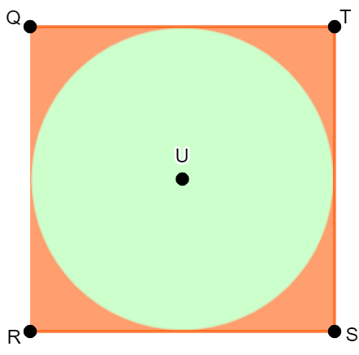
Gambar 12. Luas Lingkaran
Jawab:
Diketahui: s = 8 cm
Ditanyakan: luas lingkaran
Penyelesaian:
Berdasarkan Gambar 12., sisi-sisi persegi QRST merupakan diameter lingkaran U. Sehingga:
d = 8 cm
r = 4 cm
Maka:
L = πr2
L = 3,14 × 42
L = 3,14 × 16
L = 50,24 cm2
Jadi, luas lingkaran tersebut adalah 50,24 cm2
Sebuah lingkaran berada di dalam persegi seperti gambar di bawah ini. Jika Panjang sisi persegi tersebut adalah 28 cm maka luas wilayah yang diarsisr adalah…
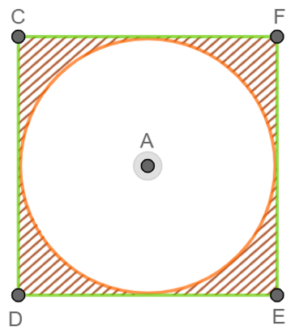
Pembahasan:
Diketahui: d = 60 cm
Ditanyakan: keliling dan luas lingkarannya
Penyelesaian:
d = 60 cm maka r = ½ d = ½ × 60 = 30 cm
k = πd = 3,14 × 60 = 188,4 cm
L = πr2 = 3,14 × 30 × 30 = 2826 cm2
Jadi, keliling lingkarannya adalah 188,4 cm dan luasnya adalah 2826 cm2.
Diketahui: r = 56 cm dan banyaknya putaran adalah 150.
Ditanyakan: jarak yang ditempuh = ?
Penyelesaian:
Jarak yang ditempuh = keliling × banyaknya putaran = 2πr × 150 = 2 × 22/7 × 56 × 150 = 52.800 meter
Diketahui: s = 28 cm
Ditanyakan: luas wilayah yang diarsir = ?
Penyelesaian:
Luas persegi = s × s = 28 × 28 =784 cm2
Kemudian, sisi persegi merupakan diameter lingkaran sehingga,
d = 28 cm, maka r = 14 cm
Luas lingkaran = πr2 = 22/7 × 142 = 616 cm2
Luas wilayah yang diarsir = Luas persegi – Luas lingkaran = 784 - 616 = 168 cm2
Diketahui: k = 176 cm
Ditanyakan: L = ?
Penyelesaian:
k = 176 cm
176 = 2 × π × r
176 = 2 × 22/7 × r
176 = 44/7 × r
r =( 176 × 7)/44
r = 28 cm
Sehingga:
Luas lingkaran = πr2 = 22/7 × 282 = 2464 cm2
Diketahui:
Keliling taman yang akan ditanami rumput (k) = 88 m
Harga rumput = Rp. 50.000,00 / meter
Ditanyakan: Biaya yang dibutuhkan untuk menanam rumput = ?
Penyelesaian:
k = 2πr
88 = 2 × 22/7 × r
88 = 44/7 × r
r = (88 × 7)/44
r = 14 cm
Luas lingkaran = πr2 = 22/7 142 = 616 m2
Sehingga,
Biaya yang dibutuhkan = 616 × Rp. 50.000,00 = Rp. 30.800.000,00
Hitunglah luas daerah yang diarsir pada gambar di bawah ini jika diketetahui panjang sisi persegi panjangnya 20 cm dan lebarnya setengah dari panjangnya.
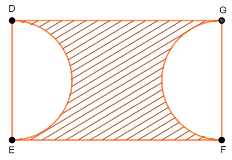
BAB 3
SUDUT-SUDUT PADA LINGKARAN
Sudut pusat adalah sudut yang dibentuk oleh dua buah jari-jari dan menghadap suatu busur lingkaran. Sementara itu, sudut keliling adalah sudut pada lingkaran yang dibentuk oleh dua tali busur. Jadi, letak perbedaan antar sudut pusat dan sudut keliling adalah elemen pembentuknya, di mana sudut pusat dibentuk oleh dua buah jari-jari dan sudut keliling dibentuk oleh dua buah tali busur (Rahaju et al., 2008).
Perhatikanlah Gambar 13. berikut. Pada Gambar 13., sudut CAB merupakan sudut pusat lingkaran sedangkan sudut EFG adalah sudut keliling lingkaran.

Gambar 13. Sudut Pusat dan Sudut Keliling Lingkaran
Jika sudut pusat lingkaran dan sudut keliling lingkaran menghadap busur yang sama maka besar sudut pusat adalah dua kali dari besar sudut kelilingnya. Untuk lebih paham, coba perhatikan Gambar 14. berikut

Gambar 14. Hubungan Sudut Pusat dan Sudut Keliling Lingkaran yang Menghadap Busur yang Sama
Hubungan sudut pusat dan sudut keliling ditunjukkan dalam Tabel 3. berikut
Tabel 3. Hubungan antara Sudut Pusat dan Sudut Keliling Lingkaran yang Menghadap Busur yang Sama
| Sudut Pusat | Sudut Keliling |
|---|---|
| 2 × sudut keliling | ½ × sudut pusat |
Contoh Soal:
Perhatikanlah gambar berikut.
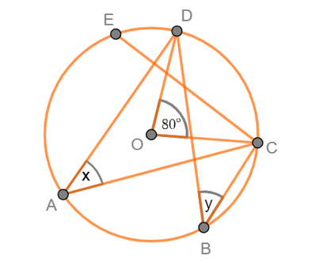
Gambar 15. Sudut Pusat dan Sudut Keliling
Berdasarkan Gambar 15., tentukanlah nilai dari x dan y!
Pembahasan:
Diketahui: Sudut pusat COD adalah 80° dan menghadap busur CD.
Ditanyakan: Nilai x dan y
Penyelesaian:
x adalah sudut keliling dan menghadap busur CD sehingga nilai x adalah setengah dari nilai sudut COD, sehingga:
x = ½ × COD = ½ × 80° = 40°
y merupakan sudut keliling yang menghadap busur CD sehingga nilai y adalah setengah dari nilai sudut COD, sehingga:
y = ½ × COD = ½ × 80° = 40°
Perhatikanlah gambar di bawah ini!
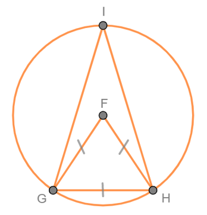
Gambar 16. Hubungan Sudut Pusat, Sudut Keliling, dan Suatu Segitiga
Berdasarkan Gambar 16., jika segitiga GHF sama sisi tentukanlah besar sudut FGH dan besar sudut GIH!
Pembahasan:
Diketahui: Segitiga GHF sama sisi sehingga setiap sudutnya berukuran 60°.
Ditanyakan: Besar sudut FGH dan besar sudut GIH
Penyelesaian:
Karena segitiga GHF sama sisi yang artinya setiap sudutnya berukuran 60° maka:
∠GIH adalah sudut keliling yang menghadap busur yang sama dengan sudut pusat FGH sehingga:
∠GIH = ½ × ∠FGH = ½ × 60° = 30°
Sudut keliling yang menghadap diameter lingkaran

Gambar 17. Sudut Keliling yang Menghadap Daimeter Lingkaran
Pada Gambar 17., lingkaran yang berpusat di titik O diameternya adalah PQ dan ∠POQ merupakan sudut pusat sedangkan ∠PRQ merupakan sudut keliling yang menghadapbusur PQ. Pada pembahasan sebelumnya, telah kita ketahui bahwa jika sudut pusat dan sudut keliling menghadap busur yang sama maka:
Sudut pusat = 2 × sudut keliling
180° = 2 × sudut keliling
Sudut keliling = 180°/2 = 90°
Dengan demikian, dapat disimpulkan bahwa:
Sudut keliling yang menghadap busur yang sama
Perhatikanlah gambar berikut.

Gambar 18. Sudut Keliling yang Menghadap Busur yang Sama
Gambar 18. menunjukkan bahwa:"
∠QTR merupakan sudut keliling lingkaran yang menghadap ke busur QR.
Jadi, ∠QTR = ½ ∠QOR
∠QPR merupakan sudut keliling lingkaran yang menghadap ke busur QR.
Jadi, ∠QPR = ½ ∠QOR
∠QSR merupakan sudut keliling lingkaran yang menghadap ke busur QR.
Jadi, ∠QSR = ½ ∠QOR
Berdasarkan uraian di atas, diperoleh bahwa: ∠QTR = ∠QPR = ∠QSR = ½ ∠QOR
Dengan demikian, dapat disimpulkan bahwa:
Sudut-sudut keliling yang berhadapan

Gambar 19. Sudut-sudut Keliling yang Berhadapan
Gambar 19. menunjukkan bahwa POR adalah sudut pusat lingkaran, sedangkan ∠PSR dan ∠PQR adalah sudut-sudut keliling yang besar sudutnya sama. Oleh karena ∠PSR dan ∠PQR merupakan sudut-sudut keliling yang menghadap busur yang sama dengan sudut pusat ∠POR maka berlaku:
Jika sudut keliling tersebut dijumlahkan maka diperoleh:
∠PSR + ∠PQR = {½ × y} + {½ × x}
∠PSR + ∠PQR = {½ × y} + {½ × (360° - y)}
∠PSR + ∠PQR = {½ × y} + {½ × 360°} - {½ × y}
∠PSR + ∠PQR = {½ × y} - {½ × y} + 180°
∠PSR + ∠PQR = 180°
Dengan demikian, dapat disimpulkan bahwa:
Contoh Soal:
Tentukanlah besar sudut GIH, GHI, dan HGI jika sudut GHI sama besarnya dengan sudut HGI.
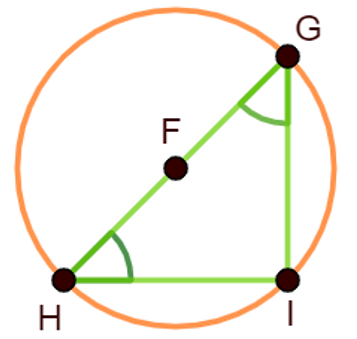
Gambar 20. Sudut-sudut Keliling Lingkaran
Pembahasan:
Jumlah sudut suatu segitiga adalah 180° lalu besar ∠GHI = ∠HGI maka:
GIH + GHI + HGI = 180°
90° + x + x = 180°
90° + 2x = 180°
2x = 180° - 90°
x = (90°)/2
x = 45°
Jadi, besar sudut GHI dan HGI adalah 45°.
Perhatikan lingkaran pada gambar berikut ini.

Gambar 21. Sudut-sudut Lingkaran yang Berhadapan
Jika ∠DAB, ABC, ∠BCD, dan ∠CDA adalah sudut keliling pada lingkaran lalu ∠CDA besarnya 100˚ dan ∠DAB adalah 85˚, tentukanlah:
Pembahasan:
Perhatikan bahwa ∠ABC merupakan sudut keliling yang berhadapan dengan sudut keliling ∠CDA
ABC + ∠CDA = 180˚
∠ABC + 100˚ = 180˚
∠ABC = 180˚– 100˚
∠ABC = 80˚
Jadi, besar ∠ABC adalah 80˚
Perhatikan bahwa ∠BCD merupakan sudut keliling yang berhadapan dengan sudut keliling ∠DAB.
∠BCD + – DAB = 180˚
∠BCD + 85˚ = 180˚
∠BCD = 180˚– 85˚
∠BCD = 95˚
Jadi, besar ∠BCD adalah 95˚

Gambar 22. Sudut Keliling Lingkaran
Kita telah mengetahui bahwa sudut keliling merupakan sudut dari perpotongan dua tali busur yang tepat berada di lengkungan lingkaran, seperti yang ditunjukkan oleh Gambar 22. di atas.
Namun, tahukah kamu bahwa terdapat bentuk-bentuk lain dari perpotongan tali busur pada sebuah lingkaran? Bentuk-bentuknya antara lain yaitu perpotongan tali busur di dalam dan di luar lingkaran seperti yang ditunjukkan oleh Gambar 23. di bawah ini.
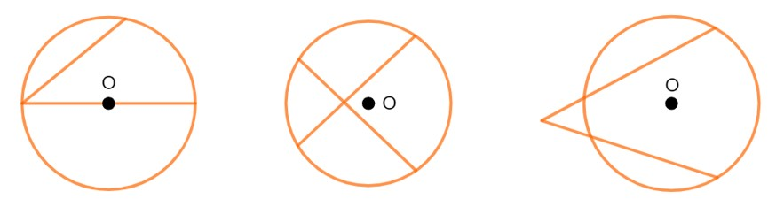
Gambar 23. Perpotongan Tali Busur Lingkaran
Jika kedua tali busur saling berpotongan di dalam atau di luar lingkaran, bagaimana cara menghitung besar sudutnya? Untuk mengetahui cara menghitung sudutnya, pelajarilah uraian berikut.
Saling Berpotongan di Dalam Lingkaran

Gambar 24. Perpotongan Tali Busur di Dalam
Pada Gambar 24., lingkaran O memiliki jari-jari OP, OQ, OR, dan OS. Adapun SQ dan PR merupakan dua tali busur yang berpotongan di titik T. Dari gambar tersebut, diperoleh:
Misalkan, kita akan menghitung besar sudut PTS. Dengan menggunakan hubungan sudut dalam dan luar segitiga, diperoleh:
∠PTS = ∠PQS + ∠QSR
∠PTS = ½ – POS + ½ . ∠QOR
∠PTS = ½ (∠POS + ∠QOR)
Dengan demikian, dapat disimpulkan bahwa:
Contoh Soal:

Gambar 25. Perpotongan Tali Busur di Dalam Lingkaran
Perhatikan lingkaran pada Gambar 25. Jika besar sudut pusat AOB adalah 80˚ dan sudut pusat DOC adalah 40˚, tentukanlah:
Pembahasan:
∠AEB = ½ · (∠AOB + ∠DOC) = ½· (80˚ + 40˚) = ½· (120˚) = 60˚
Jadi, besar ∠AEB adalah 60˚.
∠DEC = ∠AEB, saling bertolak belakang
∠DEC = 60˚
Jadi, besar ∠OEB adalah 60˚
∠PQR = ½ · (360˚ – (∠AEB + ∠DEC) = ½ · (360˚ – (60˚ + 60˚) = ½ · (360˚ – 120˚) = ½ · (240˚) = 120˚
Jadi, besar – PQR adalah 120˚.
∠AED = ∠BEC, saling bertolak belakang
∠AED = = 120˚
Saling Berpotongan di Luar Lingkaran
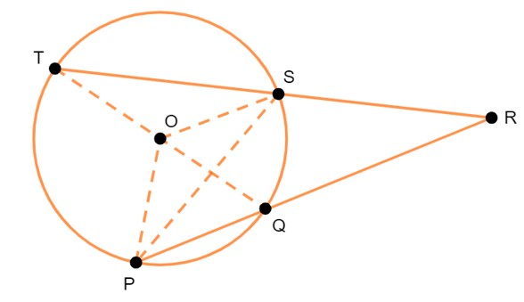
Gambar 26. Tali Busur yang Berpotongan di Luar
Perhatikanlah Gambar 26. Berdasarkan gambar tersebut ditunjukkan bahwa POT dan SOQ merupakan sudut pusat lingkaran. TR dan PR merupakan dua tali busur lingkaran yang saling berpotongan di luar lingkaran pada titik R. Dari gambar tersebut, diperoleh:
Dengan menggunakan hubungan sudut dalam dan sudut luar segitiga, diperoleh:
∠TRP = ∠TSP – ∠SPQ = ½ · ∠TOP – ½ · ∠SOP = ½ · (∠TOP – ∠SOP)
Dari uraian tersebut, diperoleh hubungan bahwa:
Contoh Soal:

Gambar 27. Perpotongan Tali Busur di Luar Lingkaran
Berdasarkan Gambar 27.. di atas, Jika besar sudut pusat AOE adalah 100˚ dan sudut pusat BOD adalah 30˚, tentukan besar sudut ACE.
Pembahasan
Oleh karena tali busur AC dan CE berpotongan di luar lingkaran maka :
∠ACE = ½ · (∠AOE – ∠BOD) = ½ · (100˚ – 30˚) = ½ · 70˚ = 35˚
Jadi, besar ∠ACE adalah 35˚
Kerjakanlah soal-soal berikut ini dengan benar!

Berapakah besar sudut QOR jika besar sudut QTR adalah 30°?

Jika besar sudut AOB adalah 70° dan besar sudut DOC adalah 45° maka berapakah besar sudut AEB?
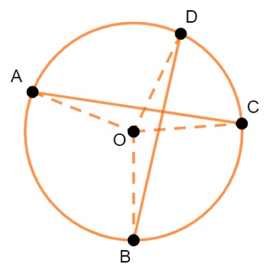
Pembahasan:
Hubungan antara sudut pusat dan sudut keliling yaitu:
Sudut pusat = 2 × sudut keliling
Sudut keliling = ½ × sudut pusat
Diketahui : sudut ACB besarnya adalah 45°
Ditanyakan : sudut pusat dan sudut kelilingnya beserta ukurannya masing-masing
Penyelesaian :
Diketahui: Besar sudut pusat PQR adalah 160° dan sudut keliling POR adalah 2x
Ditanyakan: nilai x
Penyelesaian:
∠PQR = 2 × ∠POR
160° = 2 × 2x
160° = 4x
x = 160°/4
x = 40°
Diketahui : besar sudut QTR adalah 30°
Ditanyakan : besar sudut QOR
Penyelesaian :
Jadi, ∠QTR = ½ ∠QOR = ½ × 30° = 15°
Diketahui : besar sudut AOB 70° dan besar sudut DOC 45°
Ditanyakan : besar sudut AEB
Penyelesaian :
∠AEB = ½ · (∠AOB + ∠DOC) = ½ × (70° + 45°) = 57,5°
Kerjakanlah soal-soal berikut ini dengan benar!
BAB 4
BUSUR, JURING, DAN TEMBERENG
Perhatikanlah gambar berikut.
Sudut pusat adalah sudut yang dibentuk oleh dua jari-jari yang berpotongan pada pusat lingkaran. Pada Gambar 28., sudut pusatnya adalah ∠BAC = α. Garis lengkung BC disebut busur BC dan daerah arsiran ABC disebut juring ABC.
Hubungan antara sudut pusat, panjang busur, dan luas juring adalah sebagai berikut.
Dengan demikian, rumus mencari panjang busur dan luas juring adalah sebagai berikut.
Panjang busur = α/360° × 2πr
Luas juring = α/360° × πr2
Keterangan:
α = sudut pusat
π = 3,14 atau 22/7
r = jari-jari lingkaran (cm)
Contoh Soal:
Berdasarkan Gambar 29., tentukanlah panjang busur dan luas juringnya jika diketahui jari-jarinya adalah 15 cm dan besar ∠AOB = 60° !

Gambar 29. Juring AOB
Pembahasan:
Diketahui:
r = 15 cm
∠AOB = α = 60°
Ditanyakan: Panjang busur dan luas juring = ?
Penyelesaian:
Panjang busur = AB ̂= α / 360° × 2πr
AB ̂= 60° / 360° × 2 × 3,14 × 15
AB ̂= ⅙ × 94,2
AB ̂= 15,7 cm
Jika panjang busur PQ = 16,5 cm, panjang busur QR = 22 cm, dan besar ∠POQ =45°. Maka tentukanlah besar ∠QOR, panjang jari-jari OP, luas juring OPQ dan luas juring OQR berdasarkan Gambar 30.!

Gambar 30. Lingkaran dengan Dua Buah Juring
Pembahasan:
Diketahui:
Ditanyakan:
Penyelesaian:
Hubungan antara sudut pusat dan panjang busur yaitu: besar ∠PQR / besar ∠QOR = panjang PQ ̂/ panjang QR ̂)
Sehingga:
45° / besar ∠QOR = 16,5 / 22
⇔ 45° / besar ∠QOR = (33 / 22) / 22
⇔ 45° / besar ∠QOR = 33 / 44
⇔ besar ∠QOR = 44 × 45° / 33 = 60°
Jadi, besar ∠QOR = 60°
Panjang QR ̂= besar ∠QOR / 360° × 2πr
22 = 60° / 360° × 2× 22/7 × r
22 = ⅙ × 2 × 22/7 × r
r = 22 × 6 ×7 / 2 × 22
r = 21 cm
Jadi, panjang jari-jari OP adalah 21 cm.
Tembereng adalah daerah yang dibatasi oleh busur dan tali busur. Perhatikanlah Gambar 31. Pada gambar tersebut lingkaran dengan titik pusat O memiliki tali busur AB dan garis lengkung AB sebagai busur lingkaran. Daerah yang diarsir di antara tali busur AB dan busur AB disebut tembereng.
Perhatikanlah Gambar 31. berikut.

Langkah-langkah untuk mennetukan luas tembereng adalah sebagai berikut.
Hitung luas tembereng.
Adapun rumus untuk menentukan luas tembereng adalah sebagai berikut.
Luas tembereng = Luas juring AOB – Luas segitiga AOB
Contoh Soal:
Perhatikanlah Gambar 32. di bawah ini!

Gambar 32. Tembereng PQR
Jika jari-jari lingkaran O adalah 10 cm dan panjang tali busur PQ adalah 12 cm maka tentukanlah:
Pembahasan:
Amatilah segitiga ORQ. Berdasarkan Teorema Pythagoras maka:
OR2 =OQ2 -RQ2
OR2 = 102 - 62
OR2 = 100 - 36
OR2 = 64
OR = √64
OR = 8
Jadi, panjang apotema OR adalah 8 cm.
Luas segitiga POQ = (a × t)/2 = (PQ × OR)/2 = (12 × 8)/2 = 48 cm2
Jadi, luas segitiga POQ adalah 48 cm2
Untuk menentukan luas juring POQ, kita harus menghitung luas lingkaran O terlebih dahulu.
Luas lingkaran = πr2 = 3,14 × 102 = 314 cm2
Kemudian kita hitung luas juring POQ sebagai berikut.
luas juring POQ / luas lingkaran = sudut pusat POQ / sudut satu putaran
luas juring POQ = sudut pusat POQ / sudut satu putaran × luas lingkaran
luas juring POQ = 80° / 360° × 314
luas juring POQ = 69 × 7/9 cm2
Jadi, luas juring POQ adalah 69 × 7/9 cm2
Luas tembereng = Luas juring POQ – Luas segitiga POQ = 69 × 7/9 - 48 = 21 × 7/9 cm2
Jadi, luas tembereng (daerah yang diarsir) adalah 21 × 7/9 cm2.
Hubungan antara sudut pusat, panjang busur, dan luas juring adalah sebagai berikut:
Rumus untuk menentukan luas tembereng adalah sebagai berikut:
Kerjakanlah soal-soal berikut ini dengan benar!
Diketahui ∠AOB = 45° dan OB = 7 cm, hitunglah panjang busur AB!

Pembahasan:
Diketahui :
∠AOB = 45° dan OB = 7 cm di mana ∠AOB adalah sudut pusat dan Ob adalah jari-jari
Ditanyakan : panjang busur AB
Penyelesaian :
Hubungan antara sudut pusat dan panjang busur yaitu:
sudut pusat/360° = panjang busur / 2πr
45°/360° = panjang busur / 2 × 22/7 × 7
⅛ = panjang busur/44
panjang busur = 44/8
panjang busur = 5,5 cm
Hubungan antara sudut pusat dan luas juring yaitu:
sudut pusat/360° = luas juring / πr2
45°/360° = luas juring / 22/7 × 72
⅛ = luas juring / 154
luas juring = 154/8
luas juring = 19,25 cm2
Diketahui : sudut pusatnya 60° dan jari-jarinya (r) adalah 7 cm
Ditanyakan : Luas tembereng
Penyelesaian:
Pertama, kita cari luas juringnya terlebih dahulu:
luas juring = sudut pusat / 360° × πr2
luas juring = 60°/360° × 22/7 × 72
luas juring = ⅙ × 154
luas juring = 25,66 2
Kedua, kita cari luas segitiganya:
luas segitiga = ½ × a × t
luas segitiga = ½ × 7 × 7
luas segitiga = 24,5 cm2
Lalu kita cari luas temberengnya:
luas tembereng = luas juring - luas segitiga
luas tembereng = 25,66 - 24,5
luas tembereng = 1,16 cm2
Diketahui: panjang busurnya adalah 42 cm dan besar sudut pusatnya adalah 105°
Ditanyakan: keliling lingkaran
Penyelesaian:
Hubungan antara sudut pusat dan panjang busur yaitu: sudut pusat/360° = panjang busur/2πr
Di mana rumus keliling lingkaran = 2πr
Sehingga:
sudut pusat/360° = panjang busur/k
k = 360°/sudut pusat × panjang busur = 360°/105° × 42 = 360°/105° × 42 = 144 cm
Diketahui : luas juringnya adalah 188,4 cm2 dan sudut pusatnya adalah 150°
Ditanyakan : panjang jari-jarinya
Penyelesaian :
luas juring = sudut pusat/360° × πr2
188,4 = 150°/360° × 3,14 × r2
r2 = (188,4 × 360°)/(3,14×150)
r2 = 144
r = √144
r = 12 cm
Kerjakanlah soal-soal berikut ini dengan benar!
BAB 5
GARIS SINGGUNG LINGKARAN
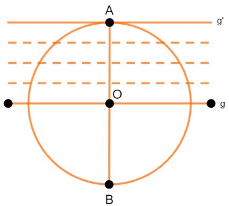
Gambar 33. Garis Singgung Lingkaran yang Menyinggung di Titik A
Gambar 33. di atas menunjukkan lingkaran yang berpusat di titik O dengan diameter AB. Garis g tegak lurus AB dan memotong lingkaran di dua titik. Jika g digeser terus menerus ke atas hingga menyentuh titik A maka akan diperoleh garis g' yang menyinggung lingkaran dan tegak lurus AB. Garis g' disebut garis singgung dan titik A disebut titik singgung. Uraian di atas menggambarkan definisi dari garis singgung lingkaran yaitu:
Garis singgung lingkaran adalah garis yang memotong lingkaran tepat di satu titik. Titik tersebut dinamakan titik singgung lingkaran. Setiap garis singgung lingkaran selalu tegak lurus terhadap jari-jari (diameter) yang melalui titik singgungnya.
Gambar 34. memperlihatkan bahwa garis g menyinggung lingkaran di titik A. Garis g tegak lurus jari-jari OA. Dengan kata lain, hanya terdapat satu buah garis singgung yang melalui satu titik pada lingkaran. Pada Gambar 7.2(b) , titik R terletak di luar lingkaran. Garis l melalui titik R dan menyinggung lingkaran di titik P, sehingga garis l tegak lurus jari-jari OP. Garis m melalui titik R dan menyinggung lingkaran di titik Q, sehingga garis m tegak lurus jari-jari OQ. Dengan demikian, dapat dibuat dua buah garis singgung melalui satu titik di luar lingkaran.

Gambar 35. Panjang Garis Singgung Lingkaran
Perhatikanlah Gambar 35. di atas. Garis AP dan BP adalah garis singgung lingkaran yang berpusat di titik O. Panjang OA = panjang OB = r = jari-jari lingkaran. Oleh karena garis singgung selalu tegak lurus terhadap jari-jari lingkaran maka panjang garis singgung AP dan BP dapat dihitung dengan menggunakan teorema Pythagoras.
Pada ΔOAB berlaku teorema Pythagoras, yaitu:
OA2 +AB2 =OB2
AB2 =OB2 -OA2
AB = √(OB2 - OA2)
AB = √(OB2 - r2)
Pada ΔOCB juga berlaku teorema Pythagoras, yaitu:
OC2 + BC2 = OB2
BC2 = OB2 - OC2
BC = √(OB2 - OC2)
BC = √(OB2 -r2)
Ternyata, AB = BC = √(OB2 - r2).
Uraian tersebut menggambarkan definisi berikut:
Contoh Soal:

Gambar 36. Garis Singgung Lingkaran
Perhatikanlah Gambar 36. Jika diketahui jari-jari lingkaran r = 6 cm dan OB = 10 cm, tentukan:
Jawab:
Pada ΔOAB berlaku teorema Pythagoras sehingga:
AB2 = OB2 - r2
AB = √(102 - 62)
BC = √64
BC = 8
Jadi, panjang AB adalah 8 cm.
Luas ΔOAB = ½ × OA × OB = ½ × 6 × 8 = 24 cm2
Kerjakanlah soal-soal berikut ini dengan benar!
Pembahasan:
Misal ilustrasi lingkarannya adalah sebagai berikut.
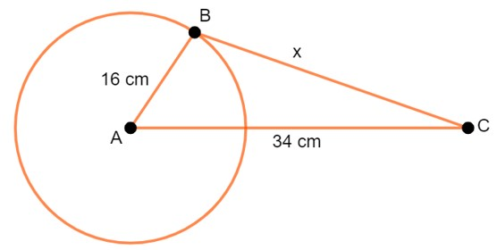
Panjang garis singgung (x) dapat kit acari menggunakan rumus Pythagoras sebagai berikut.
x = √(342 - 162) = √900 = 30 cm
Jari-jari lingkaran besar = R
Jari-jari lingkaran kecil = r
Jarak titik pusat dua lingkaran = j
Maka: Panjang garis singgung persekutuan dalam = √(j2 - (R+r)2)
Ilustrasi:
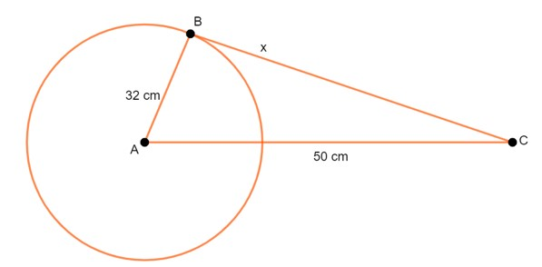
Sehingga: Panjang garis singgung (x) dapat kita cari menggunakan rumus Pythagoras sebagai berikut.
x = √(502 - 322) = √1476 = 38,42 cm
Tentukanlah panjang garis singgung lingkaran di bawah ini jika jari-jarinya adalah 6 cm dan jarak titik di luar lingkaran dengan pusat adalah 8 cm.

BAB 6
GARIS SINGGUNG PERSEKUTUAN DUA LINGKARAN
Kedudukan antara dua lingkaran dapat diketahui melalui jarak kedua pusat lingkaran dan jumlah/selisih panjang jari-jari lingkaran. Jarak kedua pusat lingkaran dapat dihitung menggunakan rumus jarak antara dua titik seperti yang diberikan pada bahasan di atas. Sedangkan jumlah atau selilisih panjang jari-jari dapat dihitung secara langsung.
Secara umum, kedudukan dua lingkaran dapat dikelompokkan menjadi tiga jenis, yaitu dua lingkaran bersinggungan, berpotongan, dan saling lepas. Macam-macam kedudukan dua lingkaran dapat diuraikan sebagai berikut.
Dua Lingkaran Bersinggungan

Gambar 37. Dua Lingkaran yang Bersinggungan
Gambar 37(a) memperlihatkan dua lingkaran yang bersinggungan di luar. Dalam kedudukan seperti ini dapat dibuat satu buah garis singgung persekutuan dalam, yaitu n dan dua garis singgung persekutuan luar, yaitu l dan m. Gambar 37(b) memperlihatkan dua lingkaran yang bersinggungan di dalam. Untuk kedudukan seperti ini dapat dibuat satu buah garis singgung persekutan luar, yaitu k dengan titik singgung A.
Letak titik pusat lingkaran pertama berada di titik P1 dan panjang jari-jari r1. Letak titik pusat lingkaran kedua berada di titik P2 dan panjang jari-jari r2. Jika |P1 P2| = r1 + r2 maka L1 dan L2 memiliki sebuah satu titik potong (bersinggungan).

Gambar 37(a). Dua Lingkaran yang Bersinggungan di Luar
Sebuah lingkaran dengan memiliki titik pusat P1 dan P2 dengan diameter r1 > r2. Jika |P1 P2| = r2 maka L1 dan L2 bersinggungan di dalam salah satu lingkaran.

Gambar 37(b). Dua Lingkaran yang Bersinggungan di Dalam
Dua Lingkaran Berpotongan
Dua lingkaran yang berpotongan seperti yang ditunjukkan oleh Gambar 38. mempunyai dua garis singgung persekutuan luar, yaitu r dan s

Gambar 38. Dua Lingkaran yang Berpotongan
Dua buah lingkaran memiliki letak di titik P1 dan titik P2 dengan jari-jari r1 dan r2. Jika r1 – r2 < |P1 P2| maka L1 berpotongan dengan L2 pada dua titik seperti yang ditunjukkan gambar berikut.

Gambar 38(a). Dua Lingkaran yang Berpotongan
Dua Lingkaran Saling Lepas
Gambar 39. memperlihatkan dua lingkaran yang saling lepas atau terpisah. Dalam kedudukan seperti ini, dapat dibuat dua garis persekutuan luar, yaitu k dan l dan dua garis persekutuan dalam, yaitu m dan n.
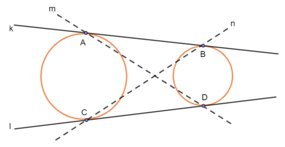
Gambar 39. Dua Lingkaran yang Saling Lepas
Dua buah lingkaran memiliki pusat yang terletek di titik P1 dan P2 dengan panjang jari-jari r1 dan r2. Jika jarak antara kedua pusat lingkaran |P1 P2| > r1 + r2 maka L1 dan L2 tidak bersinggugan. Gambar kedudukan antara dua lingkaran yang saling lepas (tidak bersinggungan) ditunjukkan seperti gambar berikut.

Gambar 39(a). Dua Lingkaran yang Saling Lepas
Untuk lebih memahami terkait macam-macam kedudukan dua lingkaran, perhatikanlah Applet GeoGebra berikut dengan saksama. Kemudian coba gerakkan slider-nya untuk melihat berbagai kedudukan dua lingkaran.
Applet GeoGebra
Kedudukan Dua Lingkaran
Perhatikanlah gambar berikut.
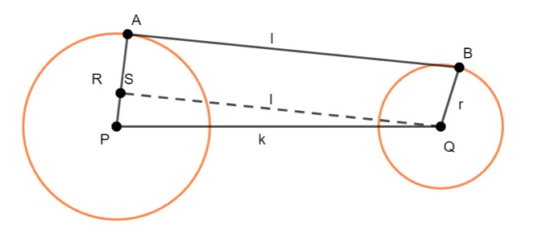
Gambar 40. Garis Singgung Persekutuan Luar
SQ merupakan translasi dari AB, sehingga panjang AB = panjang SQ = l.
Panjang SP = AP – BQ = R – r.
Sekarang, perhatikan ∆SPQ. Oleh karena – QSP = 90˚ maka kita bisa menggunakan teorema Pythagoras untuk mencari panjang SQ. ∆SPQ siku-siku di S sehingga:
PQ2 = SQ2 + SP2
SQ2 = (PQ2 - SP2)
l2 = k2 - (R-r)2 ; R>r
l = √(k2 - (R - r)2)
Jadi, panjang garis singgung persekutuan luar dua lingkaran adalah:
dengan:
l = panjang garis singgung persekutuan luar
k = jarak kedua titik pusat lingkaran
R = jari-jari lingkaran pertama
r = jari-jari lingkaran kedua
Contoh Soal:
Perhatikanlah gambar berikut.

Gambar 41. GSPL
Berdasarkan Gambar 45., jika AP = 7 cm, PQ = 13 cm, dan BQ = 2 cm serta AB adalah garis singgung persekutuan luar dua lingkaran yang berpusat di P dan Q. Maka tentukanlah panjang AB!
Jawab:
Dari gambar diperoleh:
jarak kedua titik pusat lingkaran, k = 17 cm
panjang jari-jari lingkaran pertama, R = 25 cm
panjang jari-jari lingkaran kedua, r = 17 cm
panjang garis singgung persekutuan luar = l
Sehingga:
l = √(k2 - (R-r)2) = √(172 - (25-17)2 = √(172 - 82) = √(289-64) = √225 = 15 cm
Perhatikanlah gambar berikut.
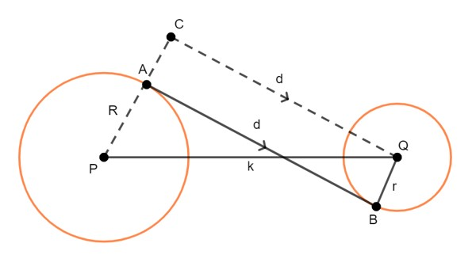
Gambar 42. GSPD
R = AP adalah jari-jari lingkaran yang berpusat di P atau lingkaran pertama dan r = BQ adalah jari-jari lingkaran yang berpusat di Q atau lingkaran kedua.
PS = AS + AP = BQ + AP = r +R = R + r.
Sekarang perhatikan ΔPSQ. Oleh karena ΔPSQ merupakan segitiga siku-siku dengan ∠PSQ = 90˚ maka kita bisa menggunakan teorema Pythagoras untuk mencari panjang SQ.
PQ2 = PS2 + SQ2
SQ2 = PQ2 - PS2
l2 = k2 - (R + r)2
l = √(k2 - (R + r)2)
Jadi, panjang garis singgung persekutuan dalam dua lingkaran adalah:
dengan:
d = panjang garis singgung persekutuan dalam
k = jarak kedua titik pusat lingkaran
R = jari-jari lingkaran pertama
r = jari-jari lingkaran kedua
Contoh Soal:
Jika diketahui PC adalah 14 cm, PQ 30 cm, dan BQ 4 cm. Maka tentukanlah garis singgung persekutuan dalamnya!
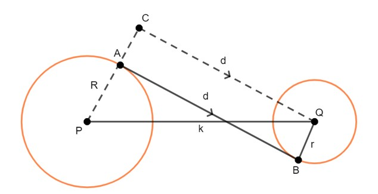
Gambar 43. Garis Singgung Persekutuan Dalam
Jawab:
Diketahui:
k = 30 cm
R = 14 cm
r = 4 cm
Sehingga:
d = √(k2 - (R+r)2) = √(302 - (14 + 4)2) = √(302 - 182) = √576 = 24 cm
Kerjakanlah soal-soal berikut ini dengan benar!
Pembahasan:
Panjang garis singgung persekutuan dalam adalah 15 cm maka d = 15 cm.
Jarak kedua titik pusatnya adalah 17 cm maka k = 17 cm.
Panjang jari-jari (R) salah satu lingkaran adalah 3 cm maka R = 3 cm.
Sehingga:
d = √(k2 - (R+r)2)
15 = √(172 - (3+r)2)
152 = 172 - (3 + r)2
225 = 289 - (3 + r)2
(3 + r)2 = 289 - 225
(3 + r)2 = 64
3 + r = √64
3 + r = 8
r = 8 - 3
r = 5 cm
Dari soal diketahui:
AO = R = 7 cm BP = r = 5 cm
Kedua lingkaran bersinggungan di luar sehingga jarak kedua titik pusat lingkaran adalah:
OP = R + r = 7 + 5 = 12 cm maka:
AB = √(OP2 - (R - r)2)
AB = √(122 - (7 - 5)2)
AB = √(144 - 22)
AB = √140
AB = 2√35
Diketahui:
l = 12 cm
R = 11 cm
r = 2 cm
Ditanyakan: k = ?
Penyelesaian:
l = √(k2 - (R - r)2)
l2 = k2 - (R - r)2
122 = k2 - (11 - 2)2
144 = k2 - (9)2
144 = k2 - 81
k2 = 144 + 81
k2 = 225
k = √225
k = 15 cm
Jadi, jarak kedua pusat lingkarannya adalah k = 15 cm
Diketahui:
d = 16,94 cm
k = 24 cm
R = 12 cm
Ditanyakan: r = ?
Penyelesaian:
d = √(k2 - (R + r)2)
d2 = k2 - (R + r)2
(16,94)2 = 242 - (12 + r)2
286,9636 = 576 -(12 + R)2
(12 + R)2 = 576 - 286,9636
(12 + R)2 = 289,0364
12 + R = √289,0364
12 + R = 17,001
R = 17,001 - 12
R = 5,001 cm
Kerjakanlah soal-soal berikut ini dengan jawaban yang benar!
BAB 7
LINGKARAN DALAM DAN LINGKARAN LUAR
Lingkaran dalam suatu segitiga adalah lingkaran yang berada di dalam segitiga dan menyinggung semua sisi segitiga tersebut. Titik pusat lingkaran merupakan titik potong ketiga garis bagi sudut segitiga. Gambar 44. di bawah ini menunjukkan lingkaran dalam ΔABC dengan pusat O. Diketahui OP = OQ = OR adalah jari-jari lingkaran. Adapun AD, BE, dan EF adalah garis bagi sudut segitiga. Perhatikanlah gambar berikut.
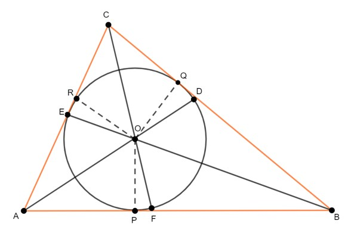
Gambar 44. Lingkaran Dalam suatu Segitiga
Adapun cara untuk menentukan jari-jari pada lingkaran dalam suatu segitiga adalah sebagai berikut.
Jika berdasarkan Gambar 44., maka sisinya adalah:
Keterangan:
s = sisi
r = jari-jari
Lingkaran luar suatu segitiga adalah suatu lingkaran yang melalui semua titik sudut segitiga dan berpusat di titik potong ketiga garis sumbu sisi-sisi segitiga. Gambar 45. di bawah ini menunjukkan lingkaran luar ΔABC dengan pusat O. OA = OB = OC adalah jari-jari lingkaran dan OP = OQ = OR adalah garis sumbu sisi-sisi segitiga.
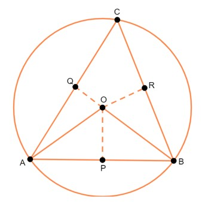
Gambar 45. Lingkaran Luar suatu Segitiga
Adapun cara untuk menentukan jari-jari pada lingkaran luar suatu segitiga adalah sebagai berikut.
Dengan r adalah jari-jari.
Cara untuk menentukan jari-jari pada lingkaran dalam suatu segitiga adalah sebagai berikut.
r = Luas ∆ABC / s
Cara untuk menentukan jari-jari pada lingkaran luar suatu segitiga adalah sebagai berikut.
r = (AB × BC × AC) / (4 × Luas ∆ ABC)
Kerjakanlah soal-soal berikut ini dengan benar!
Perhatikanlah gambar di bawah ini.
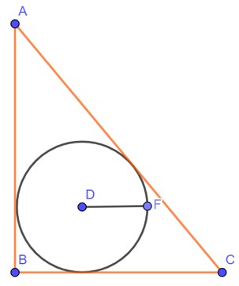
Tentukanlah jari-jari pada lingkaran di atas jika diketahui AB tegak lurus BC lalu AB = 20 cm, BC = 15 cm, dan AC = 25 cm.
Tentukanlah jari-jari dari gambar di bawah ini.
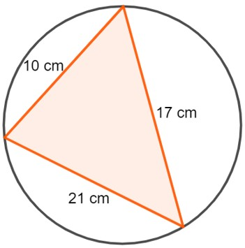
Pembahasan:
Jari-jari lingkaran dalam segitiga:
s = ½ (AB + BC + AC) = ½ (20 + 15 + 25) = 60/2 = 30
Luas ∆ ABC = (AB × BC)/2 = (20 × 15)/2 = 150
r = L/s = 150/30 = 5 cm
Setengah keliling segitiga dan luas segitiga berturut-turut adalah:
s = ½ (10 + 17 + 21) = 48/2 = 24
Luas ∆ = √(s(s - a)(s - b)(s - c))
Luas ∆ = √(24(24 - 10)(24 - 17)(24 - 21))
Luas ∆ = √(24(14)(7)(3))
Luas ∆ = √7056 = 84
Jari-jari lingkaran luarnya yaitu:
R = abc/4L = (10 × 17 × 21)/(4 × 84) = 10,625 cm
Kerjakanlah soal-soal berikut ini dengan benar!
Perhatikanlah gambar di bawah ini.
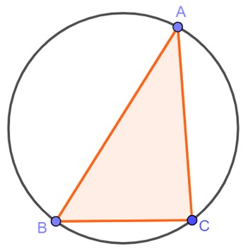
Jika diketahui bahwa panjang AB = 10 cm, BC = 6 cm, dan AC = 8 cm (Tripel Phytahoras), tentukan perbandingan jari-jari lingkaran dalam dan lingkaran luar dari gambar di atas!
DAFTAR PUSTAKA
Agus, N. A. (2008). Mudah Belajar Matematika Untuk Kelas VIII. In Pusat Perbukuan, Jakarta. Pusat Perbukuan, Departemen Pendidikan Nasional.
Manalu, A. C. S., Manalu, S., & Zanthy, L. S. (2020). Analisis Kesulitan Siswa SMP Kelas IX dalam Menyelesaikan Soal Materi Lingkaran. Jurnal Cendekia : Jurnal Pendidikan Matematika, 4(1), 104–112. https://doi.org/10.31004/cendekia.v4i1.179
Nuharini, D., & Wahyuni, T. (2008). Matematika Konsep dan Aplikasinya. Pusat Perbukuan, Departemen Pendidikan Nasional. Bukupaket.com
Rahaju, E. B., Sulaiman, R., S, T. Y. E., Kusrini, Maesuri, S., Masriyah, & Ismail. (2008). Contextual Teaching and Learning Matematika: Sekolah Menengah Pertama/Madrasah Tsanawiyah (4th ed.). Pusat Perbukuan, Departemen Pendidikan Nasional.
Rahmah, N. (2013). Hakikat Pendidikan Matematika. Al-Khwarizmi: Jurnal Pendidikan Matematika Dan Ilmu Pengetahuan Alam, 1(2), 1–10. https://doi.org/10.24256/jpmipa.v1i2.88
Sholehah, N. (2014). Sejarah Lingkaran. https://nurulsholehah.wordpress.com/matematika/lingkaran/sejarah-lingkaran/
Siti Azriah Yundianti lahir di Tangerang pada 25 Juni 2003. Ia merupakan mahasiswa semester genap jurusan Pendidikan Matematika di Universitas Sultan Ageng Tirtayasa. Wanita yang akrab disapa Azriah ini sudah memiliki ketertarikan pada ilmu hitung sejak duduk di bangku Sekolah Dasar. Rasa penasarannya terhadap ilmu hitung sangat tinggi. Anak bungsu dari dua bersaudara ini gemar membaca serta mendengarkan musik bernuansa Timur Tengah.
Azriah merupakan sosok yang senang mencoba hal-hal baru dan tertarik untuk bergabung pada komunitas-komunitas yang berfokus pada bidang Islam, Pendidikan, dan Psikologi. Saat masa putih biru, ia bergabung dengan Ikatan Pelajar Muslim dan sempat menjabat sebagai sekretaris selama satu periode. Kemudian ia juga pernah menjadi ketua organisasi Pusat Informasi dan Konseling Remaja dan menjadi wakil koordinator divisi keputrian ekstrakurikuler Rohani Islam pada masa putih abu-abu. Sekarang ini, Azriah sedang menjalani aktivitas perkuliahan serta bergabung dengan salah satu UKM di kampus tempatnya belajar, yakni UKM Aktivitas Keagamaan Mahasiswa Islam (AKMI) Untirta. Pada UKM AKMI Untirta, Azriah merupakan anggota Departemen Syi’ar. Hal ini sesuai dengan visi hidupnya, yaitu “fastabiqul khairaat”.
Ketertarikannya pada dunia Pendidikan, membuatnya mantap untuk mengambil jurusan Pendidikan Matematika di Universitas Sultan Ageng Tirtayasa. Melihat masih banyaknya peserta didik yang merasa kesulitan dan menganggap Matematika adalah hal yang menakutkan, maka ia bertekad untuk menghasilkan suatu karya yang dapat membantu menyelesaikan permasalahan tersebut.
Bahan ajar “Lingkaran” ini merupakan karya pertamanya yang ia susun dengan penuh kesungguhan. Azriah berharap dengan adanya bahan ajar ini dapat meningkatkan kemampuan para peserta didik dalam memahami materi Lingkaran, membantu para peserta didik dalam menyelesaikan berbagai permasalahan yang berkaitan dengan lingkaran, serta membantu kesulitan-kesulitan yang dialami peserta didik.
Bapak Aan Hendrayana merupakan seorang Dosen pada jurusan Pendidikan Matematika di Universitas Sultan Ageng Tirtayasa. Adapun informasi lain terkait beliau yang penulis dapatkan melalui PDDikti adalah sebagai berikut.
Nama : Aan Hendrayana
Jabatan Fungsional : Lektor Kepala
NIDN : 0023037502
E-mail : aanhendrayana@untirta.ac.id
Riwayat Pendidikan :